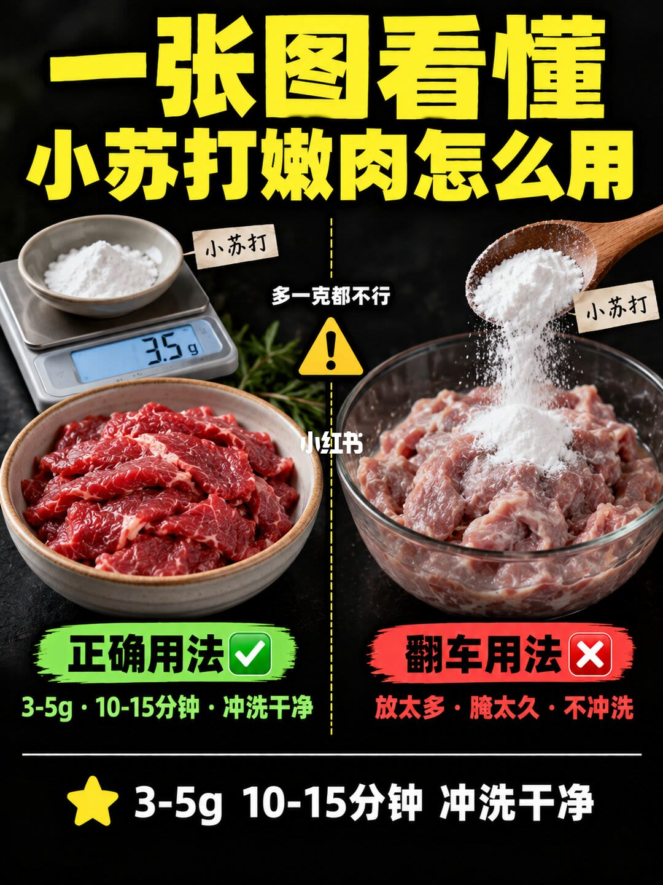
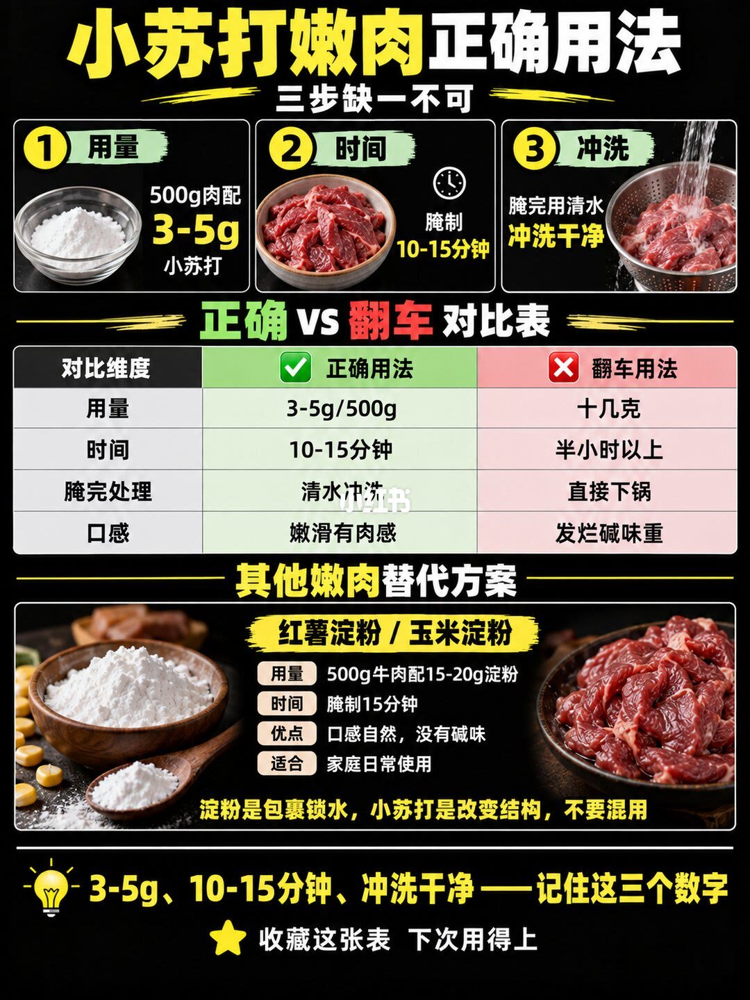

图文实录 · 小红书 · 贝牛贝羊生鲜
一张图看懂｜小苏打嫩肉怎么用？
笔记给的用法是三个数一起用：500 克肉配 3 到 5 克小苏打，腌 10 到 15 分钟，然后用清水冲洗。翻车被写成放太多、腌太久、不冲洗。不想用碱，图上改推红薯淀粉或玉米淀粉，并写明不要混用。
1/2
三个数，对三种翻车

黑底左右分栏，标题是「一张图看懂 小苏打嫩肉怎么用」。左边绿标「正确用法」：电子秤上有一小碟白粉，标签写小苏打，读数是 3.5 克；下面一碗切好的生牛肉片。绿字是「3-5g · 10-15分钟 · 冲洗干净」。右边红标「翻车用法」：木勺往碗里倒很多白粉，下面的肉拌进大量白粉。红字是「放太多 · 腌太久 · 不冲洗」。中间警告写「多一克都不行」。底部再重复一遍三个数。
这一页把用量、时间和冲洗绑在一起，但秤旁边没有写出肉有多少。3.5 克落在 3 到 5 克里面，和「多一克都不行」并排放着：一边是一个区间，一边是差一克也不行。肉重要到下一页才写出来。
2/2
500 克肉，以及淀粉替代

标题改成「小苏打嫩肉正确用法」，上面写「三步缺一不可」。用量：500 克肉配 3 到 5 克小苏打，配图是一小碗白粉。时间：腌制 10 到 15 分钟，配图是一碗生牛肉片。冲洗：腌完用清水冲洗干净，配图是水流冲过漏勺里的肉。
中间四行对照。用量：3 到 5 克每 500 克，对十几克。时间：10 到 15 分钟，对半小时以上。腌完：清水冲洗，对直接下锅。口感：嫩滑有肉感，对发烂、碱味重。
下面是替代方案，写的是红薯淀粉或玉米淀粉：500 克牛肉配 15 到 20 克淀粉，腌 15 分钟，口感自然、没有碱味，适合家庭日常。关键一句在图上：「淀粉是包裹锁水，小苏打是改变结构，不要混用。」底部让人记住 3 到 5 克、10 到 15 分钟、冲洗干净。
汇总
先称、限时、再冲，三者缺一页都算翻车
图上的做法：500 克肉、3 到 5 克小苏打、10 到 15 分钟、清水冲洗。第 1 页给出三个数和 3.5 克的秤面，第 2 页补上 500 克，并把失败写成十几克、半小时以上、不冲洗就下锅。替代写在第 2 页下半：淀粉 15 到 20 克、15 分钟，机制是包裹锁水，不要和小苏打一起用。
说明里还有一层图上没画完的步骤：小苏打是碳酸氢钠，作者说它提高肉的酸碱度，让纤维吸水、结构变松；操作上要加少许水抓匀，冲净沥干后再加生抽、蚝油；时间不要超过 20 分钟。图上的失败线是半小时以上，说明里的上限是 20 分钟，两处没有画成同一条线。
边界：用量和时间是这篇笔记的厨房数字，不是检测报告。第 1 页「多一克都不行」比第 2 页的 3 到 5 克区间更绝对，按第 2 页的表来执行更一致。图上没有不同部位牛肉的分开用量。